Warning: package 'tidyverse' was built under R version 4.5.2
Warning: package 'ggplot2' was built under R version 4.5.2
Warning: package 'tidyr' was built under R version 4.5.2
Warning: package 'readr' was built under R version 4.5.2
Warning: package 'purrr' was built under R version 4.5.2
Warning: package 'dplyr' was built under R version 4.5.2
Warning: package 'stringr' was built under R version 4.5.2
Warning: package 'forcats' was built under R version 4.5.2
Warning: package 'lubridate' was built under R version 4.5.2
── Attaching core tidyverse packages ──────────────────────── tidyverse 2.0.0 ──
✔ dplyr 1.1.4 ✔ readr 2.1.6
✔ forcats 1.0.1 ✔ stringr 1.6.0
✔ ggplot2 4.0.1 ✔ tibble 3.3.0
✔ lubridate 1.9.4 ✔ tidyr 1.3.1
✔ purrr 1.2.0
── Conflicts ────────────────────────────────────────── tidyverse_conflicts() ──
✖ dplyr::filter() masks stats::filter()
✖ dplyr::lag() masks stats::lag()
ℹ Use the conflicted package (<http://conflicted.r-lib.org/>) to force all conflicts to become errors
f <-"https://raw.githubusercontent.com/difiore/ada-datasets/main/IMDB-movies.csv"d <-read_csv(f)
Rows: 28938 Columns: 10
── Column specification ────────────────────────────────────────────────────────
Delimiter: ","
chr (6): tconst, titleType, primaryTitle, genres, nconst, director
dbl (4): startYear, runtimeMinutes, averageRating, numVotes
ℹ Use `spec()` to retrieve the full column specification for this data.
ℹ Specify the column types or set `show_col_types = FALSE` to quiet this message.
Calculating the mean and standard deviation of the sampling distribution of runtimeMinutes for each decade:
hist(sample_20s$mean_runtimeMinutes)
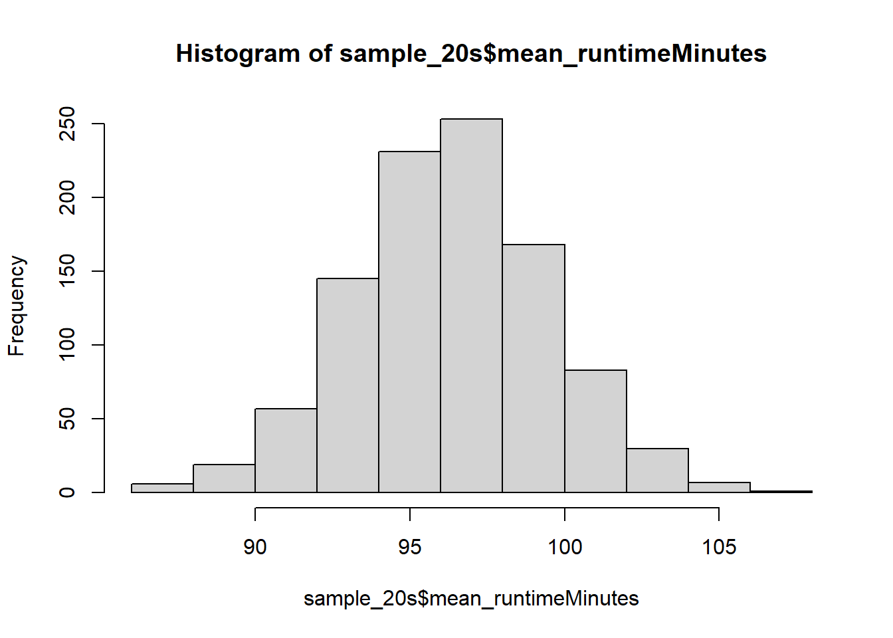
mean(sample_20s$mean_runtimeMinutes)
[1] 96.31252
sd(sample_20s$mean_runtimeMinutes)
[1] 3.166012
hist(sample_30s$mean_runtimeMinutes)
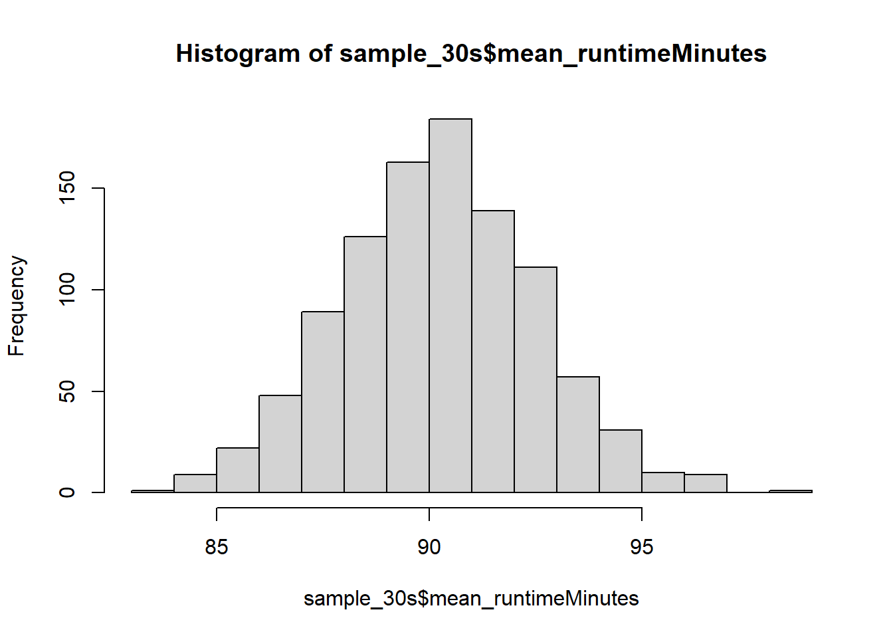
mean(sample_30s$mean_runtimeMinutes)
[1] 90.20868
sd(sample_30s$mean_runtimeMinutes)
[1] 2.283491
hist(sample_40s$mean_runtimeMinutes)
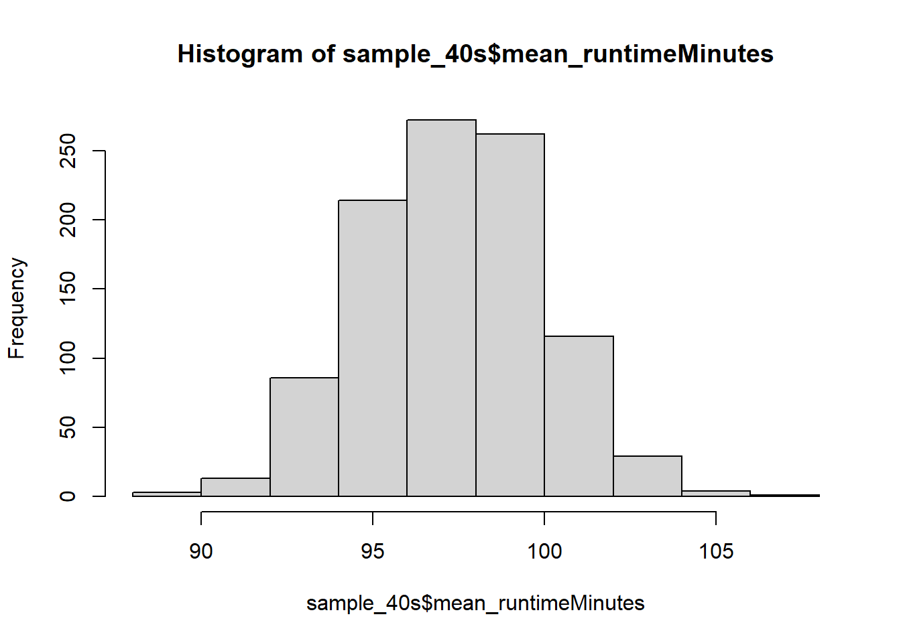
mean(sample_40s$mean_runtimeMinutes)
[1] 97.3467
sd(sample_40s$mean_runtimeMinutes)
[1] 2.611981
hist(sample_50s$mean_runtimeMinutes)
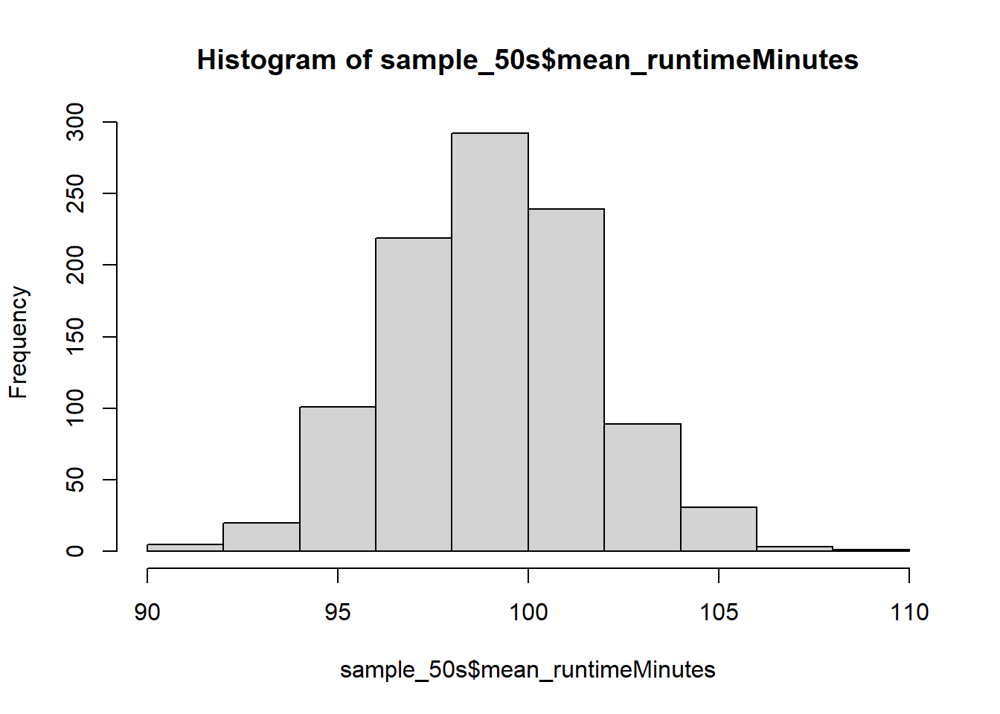
mean(sample_50s$mean_runtimeMinutes)
[1] 99.05658
sd(sample_50s$mean_runtimeMinutes)
[1] 2.628687
hist(sample_60s$mean_runtimeMinutes)
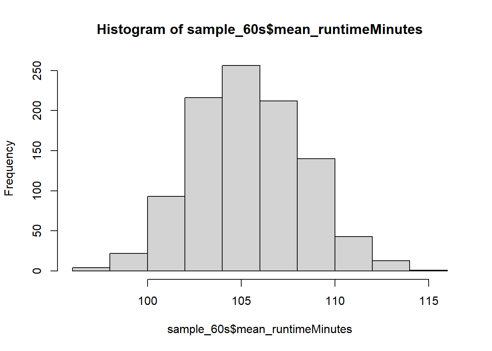
mean(sample_60s$mean_runtimeMinutes)
[1] 105.4187
sd(sample_60s$mean_runtimeMinutes)
[1] 2.912507
hist(sample_70s$mean_runtimeMinutes)
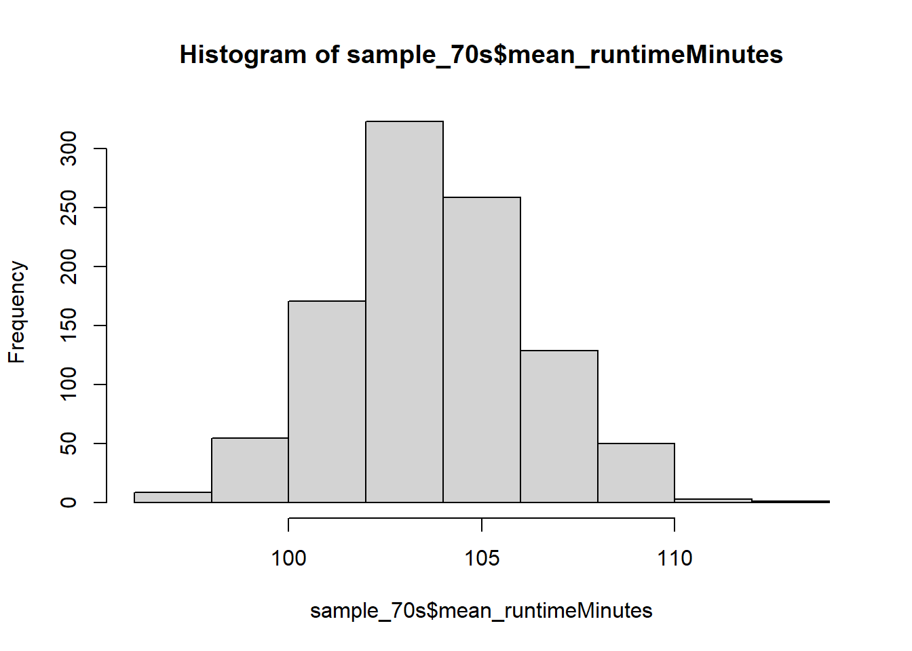
mean(sample_70s$mean_runtimeMinutes)
[1] 103.7448
sd(sample_70s$mean_runtimeMinutes)
[1] 2.481708
Every histogram has a normal distribution.
Step 10: The standard deviations of the sampling distribution for each sample are about the same as the standard error for the first sample. The standard errors for the first sample are still the smallest calculated standard errors.
Challenge 2
Load in the data set:
g <-"https://raw.githubusercontent.com/difiore/ada-datasets/main/zombies.csv"z <-read_csv(g)
Rows: 1000 Columns: 10
── Column specification ────────────────────────────────────────────────────────
Delimiter: ","
chr (4): first_name, last_name, gender, major
dbl (6): id, height, weight, zombies_killed, years_of_education, age
ℹ Use `spec()` to retrieve the full column specification for this data.
ℹ Specify the column types or set `show_col_types = FALSE` to quiet this message.
z
# A tibble: 1,000 × 10
id first_name last_name gender height weight zombies_killed
<dbl> <chr> <chr> <chr> <dbl> <dbl> <dbl>
1 1 Sarah Little Female 62.9 132. 2
2 2 Mark Duncan Male 67.8 146. 5
3 3 Brandon Perez Male 72.1 153. 1
4 4 Roger Coleman Male 66.8 130. 5
5 5 Tammy Powell Female 64.7 132. 4
6 6 Anthony Green Male 71.2 153. 1
7 7 Theresa Hamilton Female 70.3 160. 0
8 8 Phyllis Jenkins Female 59.8 109. 4
9 9 Steven Long Male 68.6 153. 9
10 10 Russell Chavez Male 72.8 169. 2
# ℹ 990 more rows
# ℹ 3 more variables: years_of_education <dbl>, major <chr>, age <dbl>
Making box plots for each variable divided by gender:
bpheight <-ggplot(z, aes(x = gender, y = height)) +geom_boxplot()bpheight
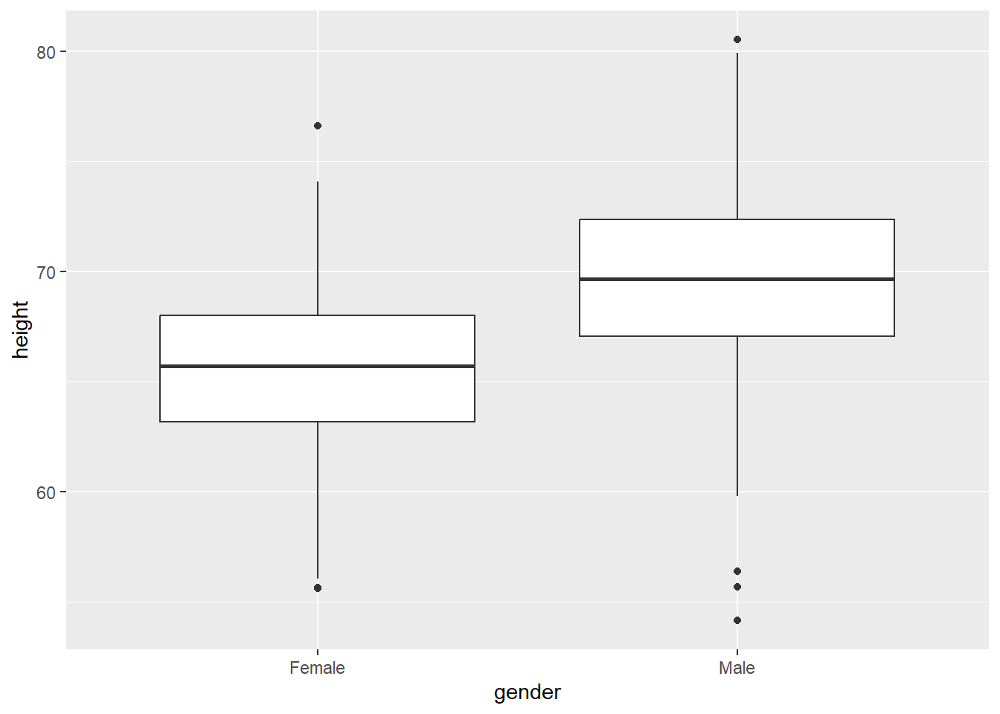
bpweight <-ggplot(z, aes(x = gender, y = weight)) +geom_boxplot()bpweight
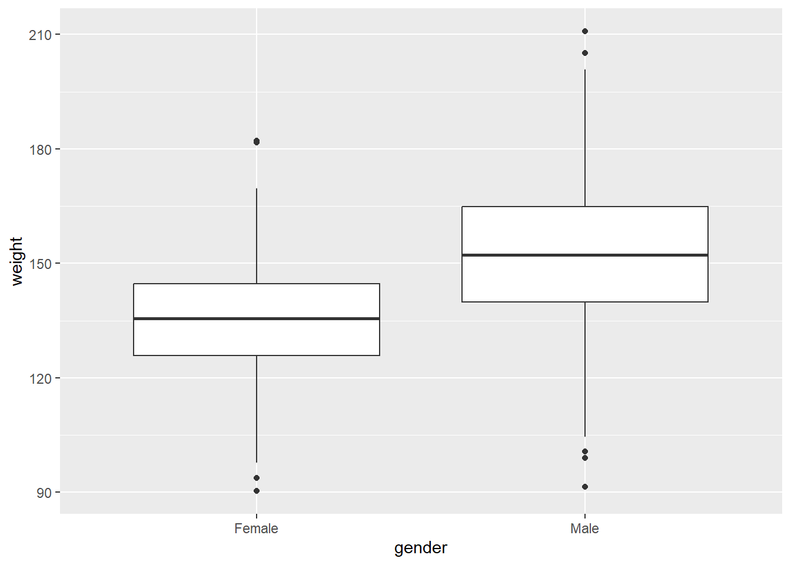
bpage <-ggplot(z, aes(x = gender, y = age)) +geom_boxplot()bpage
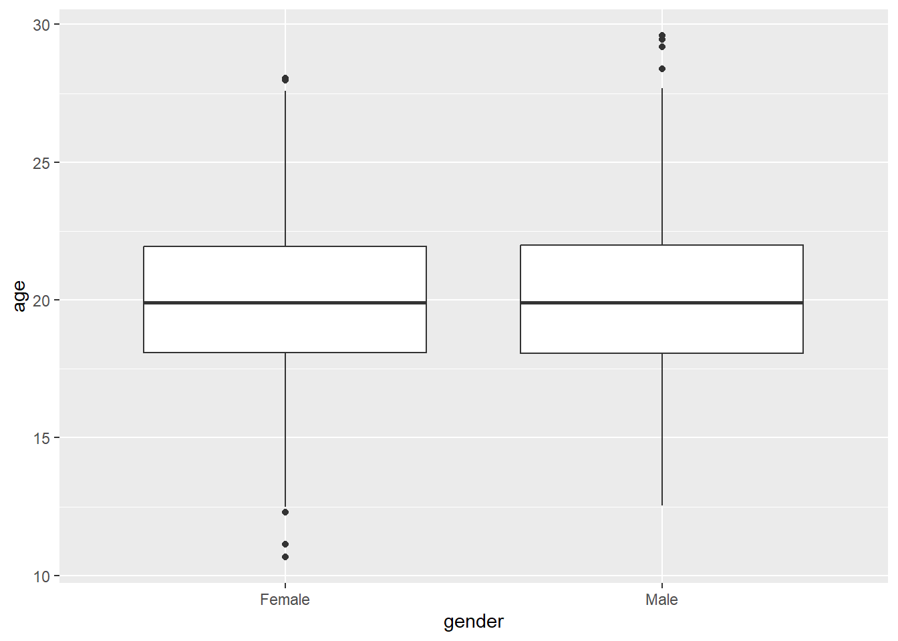
bpzkilled <-ggplot(z, aes(x = gender, y = zombies_killed)) +geom_boxplot()bpzkilled
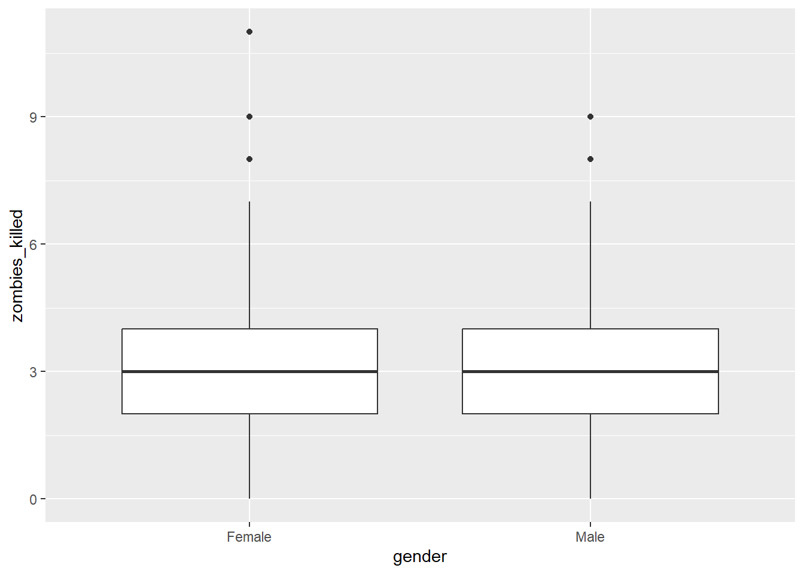
bped <-ggplot(z, aes(x = gender, y = years_of_education)) +geom_boxplot()bped
Making two scatter plots of height and weight in relation to age:
sc_height <-ggplot(z, aes(x = age, y = height)) +geom_point() +aes(color=(factor(gender)))sc_height
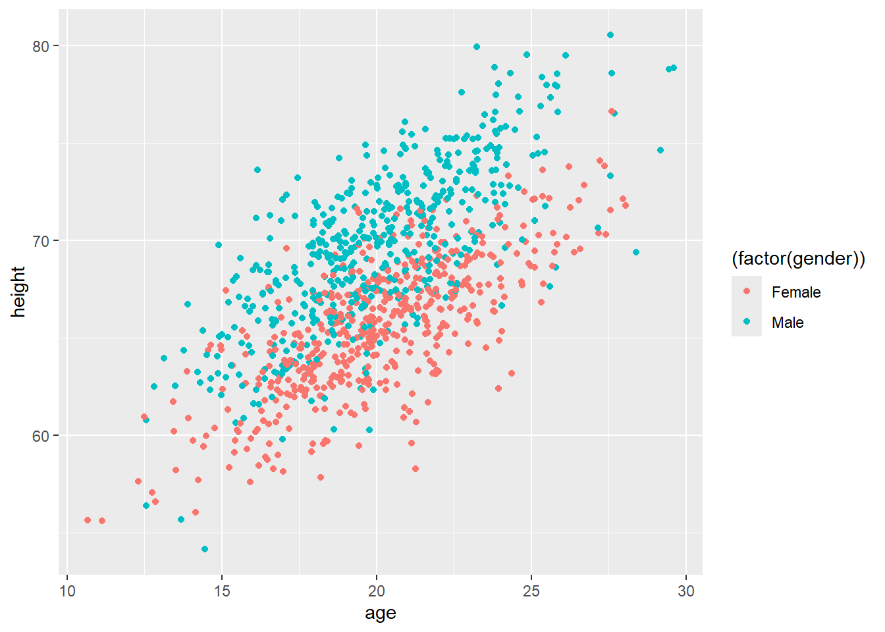
Height and weight seem to be related because there seems to be a direct relationship between the two. As age increases height also increases. It also seems like males are on average taller than females, but the same linear relationship between height and age is observed for both genders.
sc_weight <-ggplot(z, aes(x = age, y = weight)) +geom_point() +aes(color=(factor(gender)))sc_weight
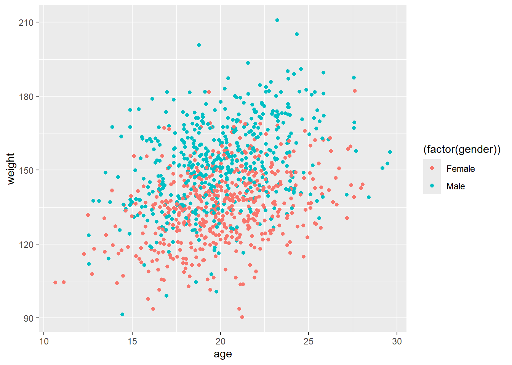
There doesn’t seem to be a clear linear relationship between age and weight, perhaps a weak relationship. More analysis would have to be done to determine whether there is a correlation between the two variables.
Determining whether the quantitative variables are drawn from a normal distribution using histograms:
Conclusion about Q-Q plot: I think zombies_killed variable is a discrete variable, instead of a continuous variable, so I don’t think it can have a normal distribution.
The standard deviations for the sampling distribution of each variable are all slightly lower than the standard errors for the one sample of 50 observations.
Plotting the sampling distribution for each variable:
hist(s3$mean_height)
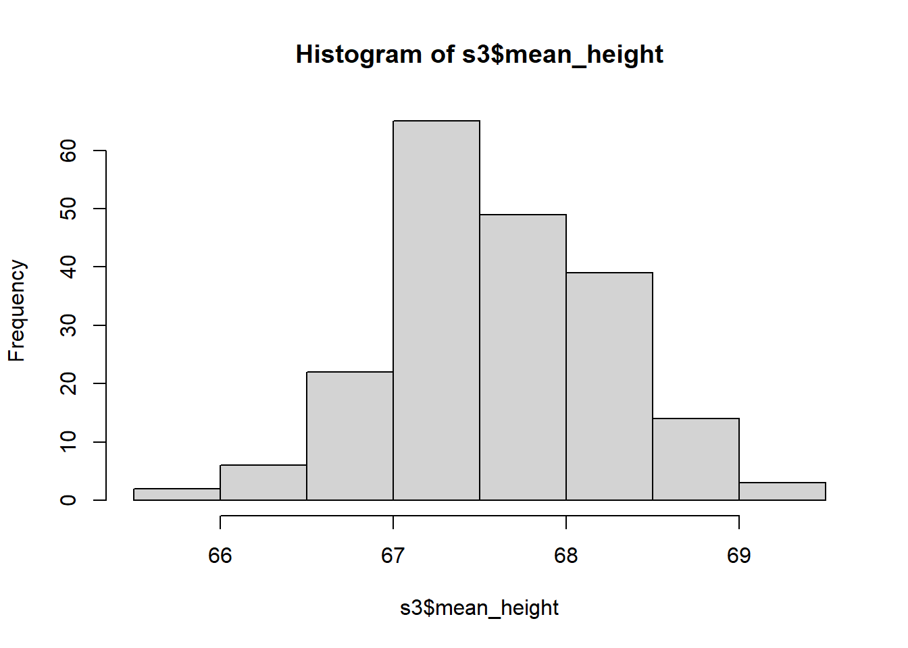
hist(s3$mean_weight)
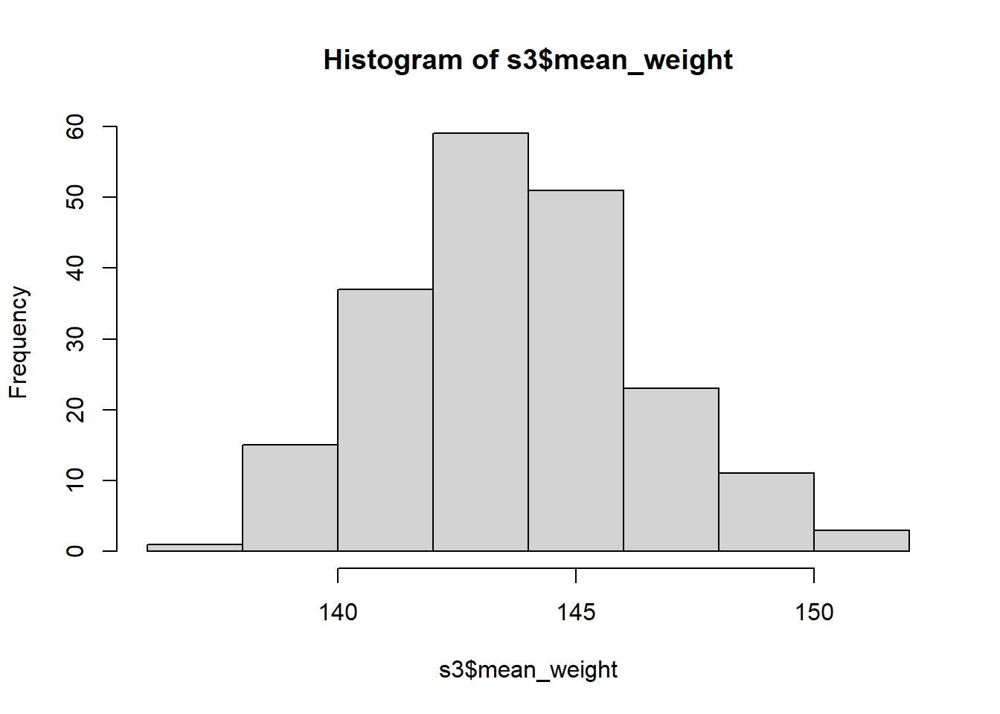
hist(s3$mean_age)
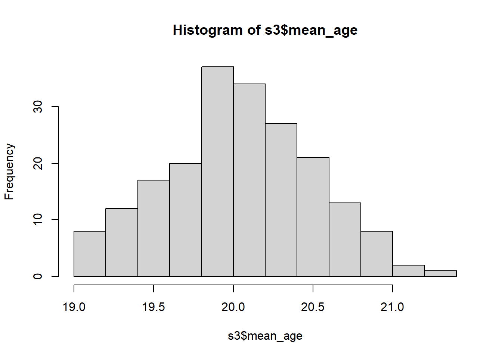
hist(s3$mean_killed)
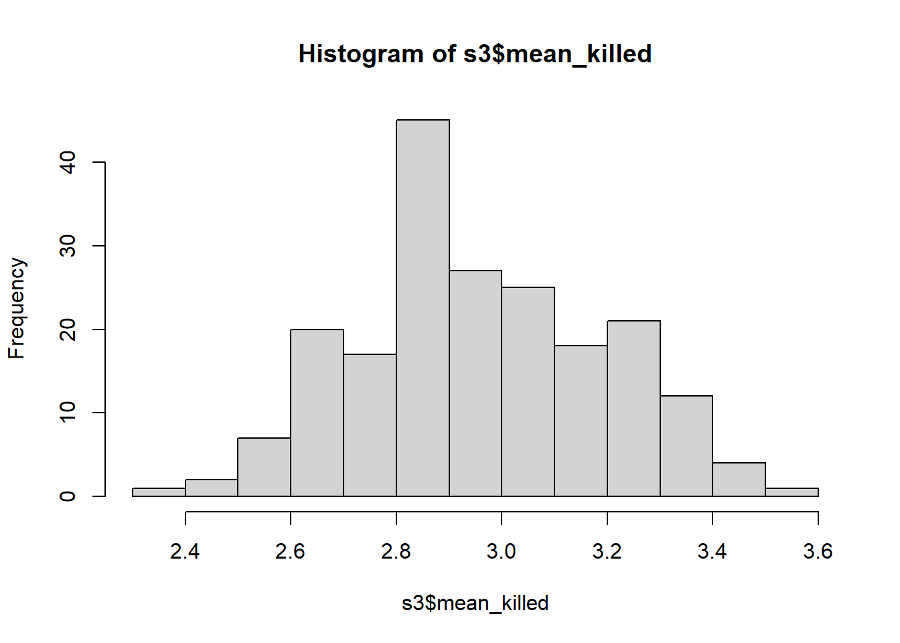
hist(s3$mean_ed)
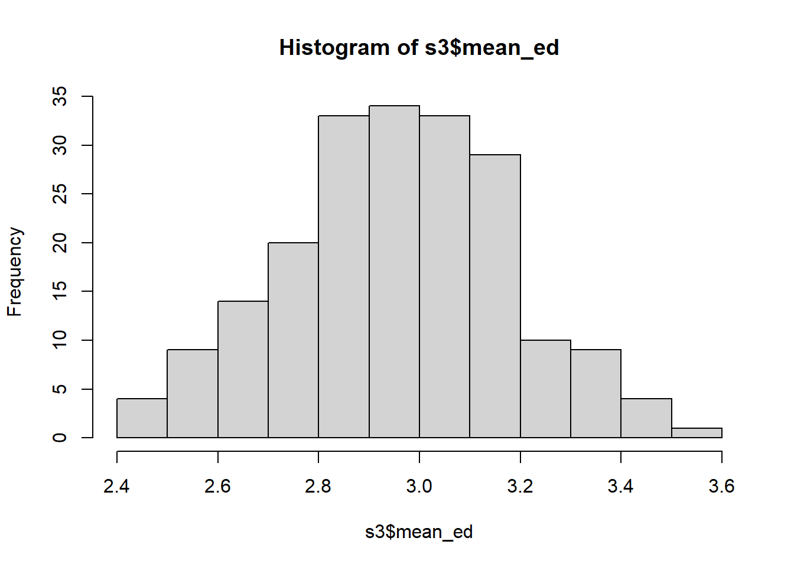
All sampling distributions appear to be normally distributed. The zombies_killed variable and years_of_education variable are normally distributed, even though they were not normally distributed for the single sample. This is due to the phenomenon of Central Limit Theorem, that if enough large samples are taken from a population, even though the variable may not have a normal distribution within the population, its sampling distribution will be normal.
Calculating a Confidence Interval for each variable from the sampling distribution:
The confidence intervals of the sampling distribution are slightly wider than that of the single sample. I would have predicted that the confidence intervals would have been narrower for the sampling distribution since there is a greater likelihood that an entire sample falls closer to the mean than a single value.
Step 10 - Bootstrapping - I followed the template for bootstrapping we learned in class and added another for() loop outside of the for() loop for the bootstrapping so that the bootstrapping was done for each variable.
The confidence intervals for the bootstrapped data are much narrower than the confidence intervals from the sampling distribution. This means that bootstrapping is a more accurate way of developing confidence intervals.